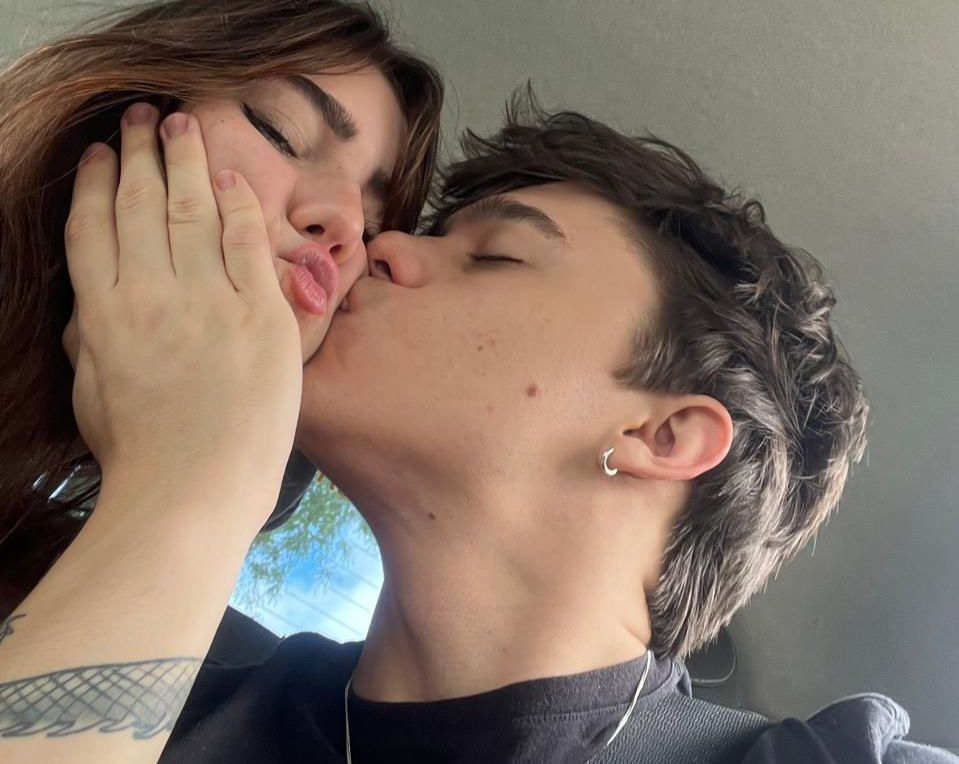

Tempo sem amora:
00
Days00
Hours00
Minutes00
Seconds00
Days00
Hours00
Minutes00
SecondsOi minha lindinha, a cada 2 dias que ficam mais perto da gente se ver, vai desbloquear um cardzinho com uma parte da nossa história do meu ponto de vista, to mexendo bastante ainda, mas espero que ache bonitinho e possa guardar no coração.
Olhando pra trás não sei nem como você conseguiu ficar com essa de "amigos" por tanto tempo. Eu não conseguia ficar longe, realmente te ganhei na insistência. Mas você tem que admitir que mesmo nessa época a gente já fazia um casal bonito. Quando você me mostrou sua playlist pela primeira vez, não consegui tirar você nem essa música da cabeça.
Taking Picutres of You
The Kooks
Passou um ano desde a primeira foto, de maio de 2023 a maio de 2024. Nesse tempo, começamos a superar alguns muros que você nem admitia que existiam. Acho que, nos meses seguintes, você finalmente considerou a ideia de que a gente podia ser mais do que amigos (com alguns benefícios, hehe).
Mas a vida não é um morango. A gente sempre levou as coisas de um jeito muito intenso, e, no fim, as inseguranças e diferenças acabaram vencendo. Brigávamos muito, acumulamos mais mágoas do que consigo lembrar agora. O engraçado é que, quando penso em tudo isso, só me vem à mente o desespero que sentia ao imaginar que não ia mais te ver, que não seria mais o motivo do teu sorriso... ou do teu choro.

Die With a Smile
Bruno Mars
Não sei explicar a paz que sinto quando seguro você perto de mim. Você ilumina qualquer quarto quando entra, de um jeito tão sutil que parece que sempre esteve ali. Não entendo como todo mundo que te conhece não se apaixona por você.
Tenho medo de um dia você não sentir a mesma paz que eu sinto quando deita no meu peito, no meu colo. Vou parar esse textinho por aqui, porque não consigo descrever em palavras o que sua presença significa para mim, talvez você ache tosco kkkk, não sei se é porque eu escutei bastante na época, mas essa música sempre me trouxe esse sentimento, de quando a gente dormia junto no pensionato, eu te abraçava a noite inteira, sem saber se, no dia seguinte, você simplesmente acordaria querendo outra coisa, pronta para seguir sem olhar para trás.
E por algum motivo essa versão da sua playlist é mais gostosinha q a do beatles.
Across the Universe
Fiona Apple
Esse aqui é dedicado pra minha vontade de sermos um casal kkkkk, sei que você não gosta muito dessas duas fotos, mas eu amo o seu sorriso na primeira e sinto que eu sou a pessoa mais feliz do mundo nas duas.
Sei que no começo foi difícil pra você, lidar com o que sente, fora o fato de que você jurava que eu odiava você na metade do tempo.
Dito tudo isso, to usando o espaço de um dos corações pra dizer que tudo que eu mais quero é sair com você, aproveitar a tua companhia, porque não existe nenhum mundo onde eu não queira passear o mundo inteiro com você, nem que seja nas suas lojinhas de costura do centro.
Também preciso dizer que você seria a melhor companhia do mundo na disney!! Você é tão engraçada, fofa, fala umas coisas tão inteligentes do nada, saiba que eu te admiro muito. Tenho ciúmes só de conversarem com você, porque tenho medo de perceberem o quão pura e incrível você é, e tentarem te roubar de mim.
The Girl Next Door
Copperpot